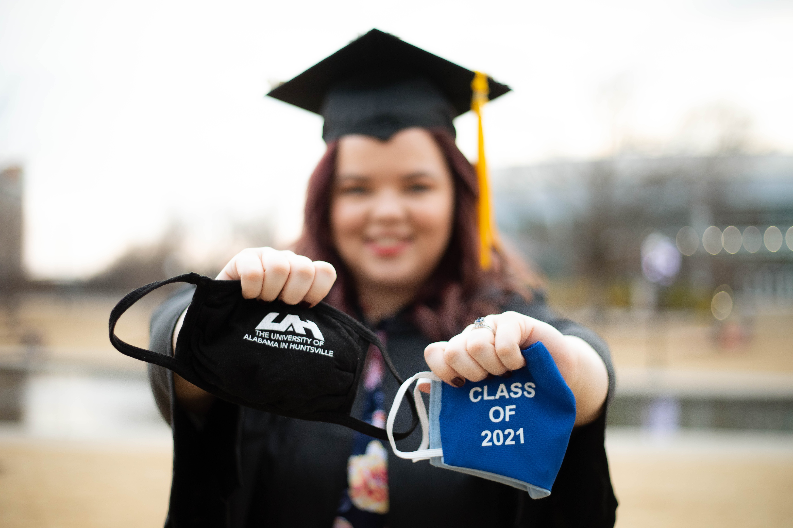

Thank you so much for visiting my portfolio! Here you will find an assortment
of coding projects and information about my technical skills! I have also
provided my resume and a list of skills for you to browse! I created this
website to provide a unique presentation of who I am, and perhaps show off my
skills in web design. I look forward to your feedback or any questions you have
about the material placed here. Please reference my contact information if you
want to reach out to me! -- Haley Powers
This website is meant to function as an electronic portfolio that shows off
my skills in software development. I enjoy all aspects of software development,
from documentation to implementation. I take pride in the work I do in school or
independently, and hope to find a company where I can be just as proud of my work!
I am currently in the process of pursuing my first entry-level position in the
software development field. In my job pursuit I will provide a link to this website
(if possible) and hope that my portfolio shows more of my personality than my resume
alone!
This online portfolio contains:
A brief About Me
Coding Projects
Official Resume
List of Skills
Contact Me section
Please feel free to download and observe any of my projects! All I ask is that you
give credit where credit is due. Enjoy getting know more about me as a person and a
programmer!
About Me
A quote that I believe represents my aspirations in life is from Mae Jemison:
"Don't let anyone rob you of your imagination, your creativity, or your curiosity. It's your place in the world; it's your life. Go on and do all you can with it, and make it the life you want to live." --Mae Jemison
As you most likely already know, my name is Haley Powers! I am a wife,
student, researcher, and pursuer of knowledge. I always try to push myself,
and others, to keep learning beyond the walls of an institution! I am passionate
about my field of study and have found joy in my future career.
I like to start with a description of my passions when I first introduce myself
because I feel demographical answers don’t reflect my personality as well, and I
believe the first few seconds between people crucially affect people’s perspectives
of each other.
Now, to get to know my background a bit more, let’s dive into the facts!
I am a recent graduate (#ClassOf2021) of The University of Alabama in Huntsville
with a B.S in Computer Science and a minor in Mathematics. I graduated
high school from Northside High School in Tuscaloosa, AL in 2016 and began my
college journey at Auburn University. At Auburn I majored in Architecture, but it
did not take long for me to figure out that I was not meant for that career. I was
not passionate about the type of work I would be doing post-graduation and decided
to take an off year in August of 2017. During that off time I researched potential
career paths and where my passions lied. I landed in technology since
I enjoy creating art that is functional as well as beautiful, so I decided on Computer Science as my field!
I applied to the University of Alabama in Huntsville and began my new journey in May
of 2018, and it has been one heck of a journey!
Outside of my education I have created a life full of creativity, love, and
stability. In April of 2020 I legally married by wonderful husband, and in August
of 2020 we were able to have a beautiful ceremony to celebrate with loved ones.
The year 2020 also introduced me to some new, and now some of my most favorite,
hobbies! I learned to cook new dishes, create unique art, and learn about new topics
outside of technology. I would like to follow this with a quote from a paper I wrote
for my Technical Editing course in the spring semester of 2020:
“Most of all, I learned that life is full of so much more than work and school. Life is about the relationships you surround yourself with and the things you do to make the world around you a little bit brighter! I hope when this pandemic ends, and the virus is but a memory, that the world remembers the days when the world relaxed for just a minute. I hope they remember to love, sing, dance, paint, bake, and smile, enjoy the ride of life; it’s only for so long!”
Now, 2021 brought a whole new experience. Moving. Ask anyone who has done an interstate move, it's not
pleasant! However, I wouldn't change it for the world! My husband and I relocated to Hanover, MD in April of 2021
due to my husband accepting a new job in the area. This is as far north as I have ever been, and the furthest I have
ever been from home. This is a new journey and we are enjoying settling our roots here in Maryland.
I have committed myself to reaching high for my goals and never ceasing in my love
of learning. The years 2020/2021 taught me a lot about myself and I am forever thankful that,
for just a moment, I got to see that I have not lost myself in the stress of my studies and worries of life.
I grew up not travelling far outside of the south-eastern United States and limited the risks
that I took. I plan to continue to step out of my comfort zone and keep chasing dreams as they
come! I want to travel to see the history of human existence and experience the diverse cultures
of the world, then I want to make a difference in that world. I look forward to working with a team
to develop products that inspire change and make the world just a little bit brighter!
Programming Projects
In order for you to experience what I am capable of doing as a Computer Science student, this section will contain projects I have worked on in school and independently. I have gathered a wide variety of programs from my years at the University of Alabama in Huntsville, and individual work completed during my down time. I have provided a brief description of each project that will allow you to select which one you would like to view first!
1. Far Skies: Alice Bang, Cameron Cooper, Haley Michaels, and Sean Pagani
This project was created through a collaborative effort by the authors listed above. We developed this game as our term project for our Intro to Object Oriented Programming in Java course at UAH.
The project is a space-themed clicker game that includes classic pixel art (authentically designed by the authors) and introduces levels to the timeless format. Our team worked hard to deliver our best work,
and we hope to continue to modify the game for possible publication.
Projects completed independently:
The first independent project I created is this website. I designed this website from scratch using HTML, CSS, and JavaScript. My end goal with this project is to have my portfolio available to potential
employers, or just for my friends to enjoy!
When it comes to my education, I wanted to take a moment to discuss how my studies have prepared me to be
a professional in the field. I will provide the overview found in my resume, and then expand on what I have
gained from my studies! I hope this provides you with more insight into what I have learned throughout my
time at the University of Alabama in Huntsville!
Education
The University of Alabama in Huntsville
Bachelor of Science, Computer Science
Graduation Date: May 5, 2021
Minors: Mathematics
Relevant Coursework:
Artificial Intelligence and Game Development
Computer Organization and Switching Theory
Computer Science II: Data Structures
Intro to Cloud Computing
Intro to Computer Networks
Intro to Design/Analysis of Algorithms
Intro to Digital Computer Architecture
Intro to Discrete Structures
Intro to Object Oriented Programming Java
Intro to Operating Systems
Intro to Video Game Design and Programming
Network Security
Principles of Programming Languages
My coursework exposed me to a handful of different languages, different IDEs, and different
programming principles. I gained skills in team collaboration through group projects
and my senior design project. In my group projects we worked together closely to reach our assigned
goals on time, if not early! These group projects were left to the students to when it came to
scheduling and how to implement the project.
However, in my senior design project we were introduced to Agile Programming and were instructed
to follow this approach for our semester project. We held daily (or at least weekly) stand-up meetings,
assigned team roles, created user stories that turned into tasks, and distributed tasks among team members
during each 19-day sprint. On each Sunday during the sprint we turned in individual and team reports that
detailed what we had accomplished during that week, and our plans for the following week. We created several
different documents detailing our development plan, requirements, architectural design, and testing plan.
Senior design was the class that felt more like an actual software development environment and less like
completing assignments for a grade! It was my favorite course in my college journey!

My education has been quite the journey, and I can’t say that I am happy that it is coming to an end. I
hope that one day I get to continue to pursue more knowledge, perhaps in the form of a master’s degree or Ph.D.
in some area of computer science! I look forward to what my career holds for me and the opportunities that lie
ahead of me!
Experience is one area that I wish I could write a paper for when I am applying to new jobs. I want to explain what I learned,
accomplished, attempted, and why I decided to move on from the position on top of my job duties. My experience has made me into
the person I am today, and I look forward to giving you a broader view of my previous positions!
Experience
I have decided to include a section about my experience so that I can go into more detail about my most recent positions.
Research Assistant II
I will start with my most recent position, my research position with the University of Alabama in Huntsville (UAH). This position
was at the Systems Management and Production (SMAP) Center at UAH in Huntsville, AL. The position involved working as part of a team
that needed someone experienced with software. The team was working on creating an Automated License Plate Reader (ALPR) system to be
distributed to schools to monitor who was on campus. When I was hired, the team was working on setting up the hardware they were going
to use for the project (i.e., cameras, solar panels, poles). I was asked to attempt to develop the software for the ALPR system so that
the schools would not have to pay for a subscription service. I began by searching for open source code with a license to use commercially,
and that search yielded little results that were viable for our project. So, I began looking into the bits and pieces of the system to implement
them one-by-one to make the implementation easier. Due to the complexity of this system, and my course load, I did not make too much progress on
the system before I left the position. I was able to start the image recognition process using Python and OpenCV packages, but when I tested the
system the process had several errors.
In the end, the team ended up rethinking the project as I left the position in January of 2021. I do believe
with a larger team the project would be successful, but in this case time was a big factor in moving directions.
In future positions I am looking to be challenged like I was in this position. I was pushed out of my comfort zone
and learned more about myself as a programmer than i expected!
Student Specialist V
My second most recent position was working with the IMPACT team at the National Space Science and Technology Center (NSSTC) at UAH. I was brought on
as a student technical writer (officially, Student Specialist V) to work alongside a development team. I was tasked to work on project descriptions,
proposals, and user guides for applications currently in development.
I would edit project descriptions and proposals as people presented them to me. This typically took one to two days depending on the length of the
documents. The bulk of my work was spent editing existing user guides, creating user guides, and turning the user guides into online documentation. I
would use Sphinx and reStructuredText files to create online user guides that would be linked into the applications with which they were associated. I
thoroughly enjoyed this job due to my passion for documentation! I find documentation to be one of my favorite parts of software development, and I often
took on the task of creating the documentation for projects in school. I left this position for the job at the SMAP Center because I felt the new job would
provide me with experience relevant to my future career. I am beyond thankful for my time with the IMPACT team and will take the growth I experienced with
me into my future endeavors!
Other Experience
I have been working since I was 16 years old. While I only include the above two positions on my resume, I have lots of experience in customer service.
I include the above two positions alone because they are the most relevant to my future career, and it is the only way to have a one-page resume! Below is
a list of positions I have held over the years before my most recent positions:
Hostess – Los Tarascos: Northport, AL
Team Member – Chick-fil-A: Northport, AL
Team Member – Chick-fil-A: Auburn, AL
Team Member – Compass Groups: Auburn, AL
Food Service Worker – Target: Hoover, AL
Food Service Worker – Target: Huntsville, AL
Server – The Social: Huntsville, AL
Food Service Worker – The Exchange: Huntsville, AL
Team Member – Sodexo: Huntsville, AL
Team Lead – Sodexo: Huntsville, AL
Hostess – Toybox Bistro: Huntsville, AL
Team Member – Chick-fil-A: Madison, AL
That is a lot of positions, right? I moved around quite a bit, mostly due to trying to find where I belonged in my college journey. I also made a vow
to myself to never stay at a job that caused me to compromise my values of customer appreciation, honesty, loyalty, and growth. I am not that proud that
I bounced around jobs for a little while, but I am proud of the woman I have become. The jobs I have held over the years taught me about communication,
teamwork, passion, inclusion, dedication, and so much more. I would not be who I am today without every one of the positions I have held in my lifetime!
Skills
Communications: Oral and Written
Operating Systems: macOS, Windows
Programming Languages:
C
CSS
C++
C#
HTML
Java
JavaScript
MATLAB
Python
reStructuredText
Major Software Packages: Adobe Acrobat Reader DC, MS Office, Visual Studio, NetBeans, Parallels Systems, Postman, Unity
Assorted Skills:
Algorithm Design
Mathematics
Software Development
Software Documentation
Technical Editing
Technical Writing
UI Design
Contact Me
If you wish to contact me please include the following in your message:
Your name
A good method to reach back out to you
Your reason for contacting me (I would prefer this to be stated in the subject of the email)
The only reason I say all of this is to know the importance of the email and how I can best respond to your inquiry!
My contact information:
General email: haleymichaels97@gmail.com
School email: hnm0007@uah.edu
Phone: Can be requested via email
Mailing address: Can be requested via email, and will only be given to trusted individuals/institutions
I look forward to hearing any comments, concerns, or questions that you may have for me. Please be kind, and kindness shall be returned!
I hope that I get to meet with any employers in person, and I hope my friends enjoyed my work!